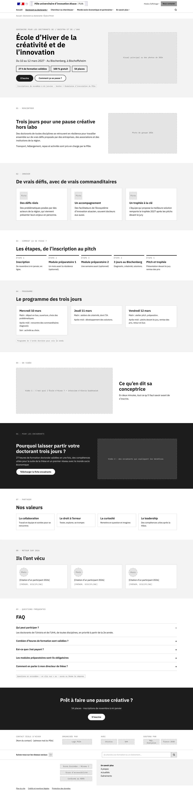
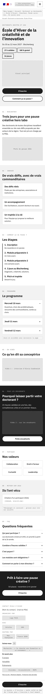
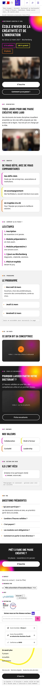
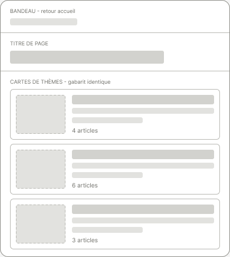
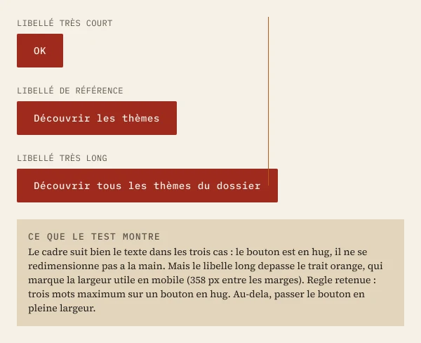
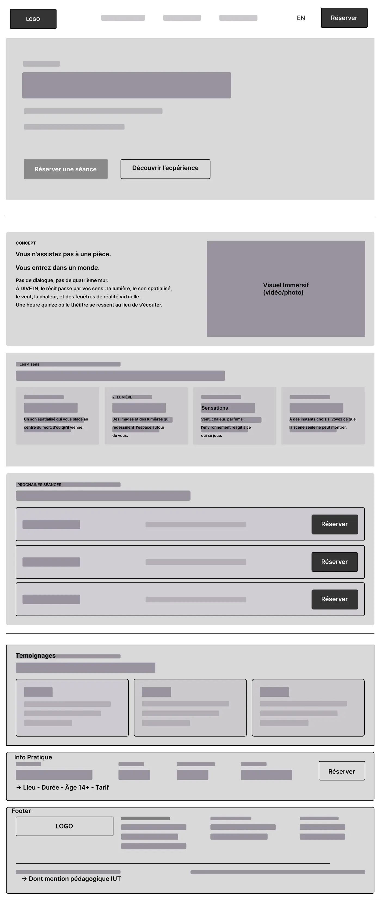
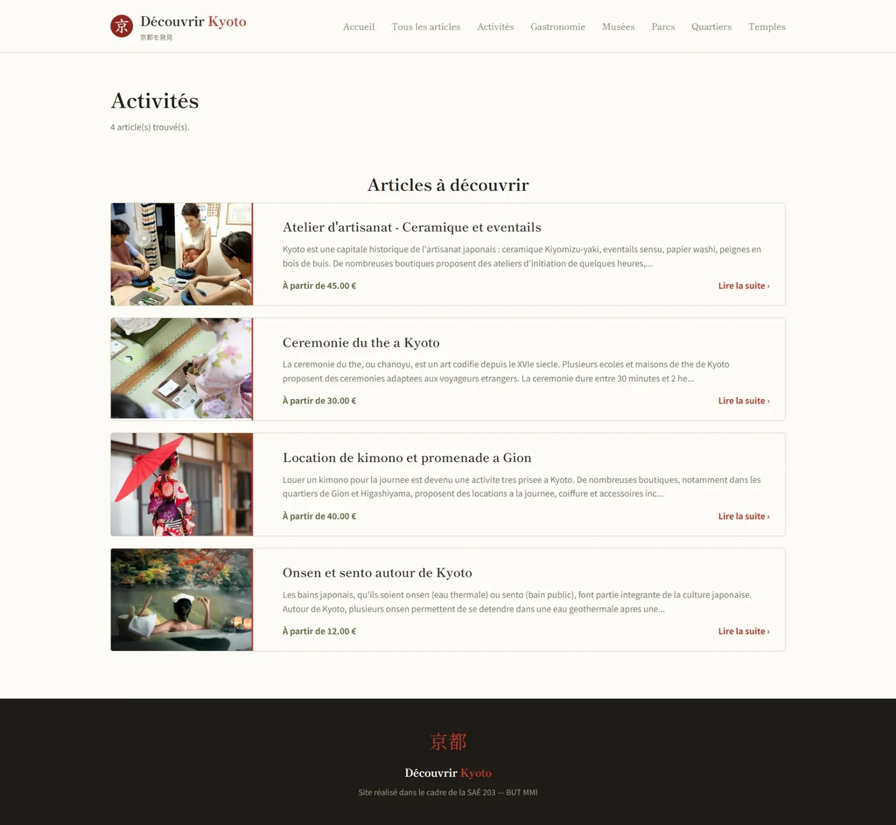
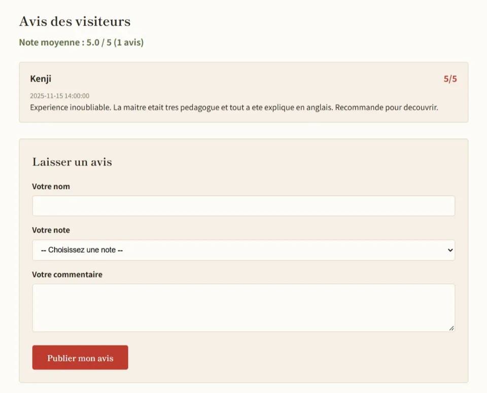

Faire connaître l’École d’Hiver aux doctorants
Un vrai commanditaire, le Pôle universitaire d’innovation Alsace, et une page à concevoir pour donner envie aux doctorants de partir trois jours en résidence.
- Stratégie et SEO
- Maquettes UI
UX/UI designer en formation, étudiant en 2e année de BUT MMI à Haguenau
Je m’appelle Yasser. Avant de dessiner un écran, je cherche ce que les gens essaient de faire, je trace leur parcours et je range les pages. Le visuel vient ensuite, sur Figma. Et comme je code aussi, je sais ce que mes maquettes demandent à l’intégration.
Disponible pour un stage de 8 semaines, du 12 avril au 4 juin 2027
Cinq projets racontés en détail. Chacun montre une partie différente du métier, du benchmark jusqu’à la mise en ligne.
Voir les projets par compétence
Un vrai commanditaire, le Pôle universitaire d’innovation Alsace, et une page à concevoir pour donner envie aux doctorants de partir trois jours en résidence.
Trois personnes, trois frustrations, et une arborescence où chaque page répond à l’une d’elles.
Un site mobile pour les enquêtes des étudiants en journalisme du CUEJ, dessiné alors que ni les textes ni les photos n’existent encore.
Un spectacle immersif sans dialogue imaginé pour le Relais Culturel de Haguenau : une stratégie, puis une page de présentation et une landing page qui ne font pas le même travail.
Mon premier site relié à une base de données. Un travail individuel, de la maquette à la mise en ligne.

Des projets plus courts, qui m’ont fait toucher à d’autres supports.
2e année
Une affiche A3 pour un hebdomadaire fictif : dix jeux de données sur l’IA à rendre lisibles par tout le monde, sur un fond clair imposé.
SAÉ 103, 1re année
Un flyer A5 recto verso pour une association de jeux de société, dessiné au trait sur Photoshop autour d’un slogan : le jeu nous oppose, puis nous rassemble.
SAÉ 105, 1re année
Mon tout premier site, codé seul, en français et en anglais. Les données y étaient encore écrites à la main dans le code.
SAÉ 104, en groupe de cinq, 1re année
Une vidéo pour un institut de formation en soins infirmiers : un entretien avec un patient en grande détresse, joué et filmé sur place. J’étais au cadre, à l’image et au son.
Un réseau social pour les créateurs de jeux vidéo, quelque part entre LinkedIn, Twitter et GitHub. J’ai dessiné les fils de fer, puis l’interface sur Figma.
SAÉ 201, 1re année
Un exercice de recommandation stratégique sur la marque Oasis Tropical : l’audit, puis une proposition de stratégie.
En groupe, 2e année, en cours
J’ai 19 ans et je suis en 2e année de BUT Métiers du Multimédia et de l’Internet à l’IUT de Haguenau (Université de Strasbourg), dans le parcours Stratégie de communication et UX design.
Ce qui me plaît dans l’UX, c’est le moment où on arrête de deviner et où on regarde vraiment ce que les gens essaient de faire. Je préfère passer du temps sur un benchmark, un parcours ou une arborescence avant d’ouvrir Figma : c’est là que les vrais problèmes se voient, et qu’ils coûtent le moins cher à corriger.
En dehors des cours : jeux vidéo, animés et visual novels japonais. Côté jeux, j’ai neuf ans de stratégie Pokémon en compétitif derrière moi. Et je fais tourner des modèles d’IA sur mon ordinateur, avec Ollama, pour traduire des visual novels du japonais vers le français.
Le Pôle universitaire d’innovation Alsace organise l’École d’Hiver de la créativité et de l’innovation : trois jours en résidence, où des doctorants de Strasbourg et de Mulhouse travaillent en équipe sur des défis posés par des entreprises, des associations et des institutions de la région. Pour la SAÉ 302, notre groupe de quatre a joué le rôle de l’agence chargée de faire connaître l’édition 2027.
Notre dossier de stratégie posait une question : comment donner envie à plus de doctorants de candidater, en s’appuyant sur les écoles doctorales et les directeurs de thèse, et en montrant ce que l’École d’Hiver leur apporte concrètement ?
Côté web, l’édition 2026 avait un mini-site à part, fait sur Canva. En tapant son nom exact dans Google, on ne le trouvait pas : on tombait sur des articles d’autres sites qui en parlaient. L’audit technique, fait à deux avec le développeur du groupe, a donné l’explication : la page était réglée pour ne pas apparaître dans les résultats de recherche.
Parmi nos recommandations, voici celle que j’ai maquettée : donner à l’École d’Hiver une vraie page sur le site du Pôle, au même endroit que les autres informations destinées aux doctorants.
J’ai commencé par des fils de fer en gris, sur ordinateur puis sur téléphone, pour choisir l’ordre des parties avant de m’occuper des couleurs. La page suit les questions qu’un doctorant se pose, dans l’ordre où il se les pose. Les fils de fer sont plus bas : le bouton « Fil de fer » les affiche à la place des maquettes.
La charte de l’édition 2027 était imposée : des fonds sombres, des couleurs vives, un esprit de soirée festive. Mon travail n’était pas de la changer, mais de la faire tenir sur une longue page qui reste lisible.




Maquettes Figma finales, faites avec les retours du groupe. Les photos de groupe sont floutées ici. Les vidéos et les témoignages restent des emplacements en attendant les vrais : on n’a pas voulu en inventer. Sur la version téléphone, les notes grises expliquent ce qui change par rapport à l’ordinateur. Le bouton « Fil de fer » montre la même page avant les couleurs.
Une bonne page ne sert à rien si personne n’y arrive. Sur le site du Pôle, j’ai ajouté un lien « École d’Hiver » dans le menu « Doctorant ou doctorante », là où le doctorant cherche déjà ce qui le concerne. Il mène à la page, sur ordinateur comme sur téléphone.
1Il ouvre le menu « Doctorant ou doctorante ».

2Il clique sur le nouveau lien « École d’Hiver ».

Captures du vrai site du Pôle, avec le lien ajouté. En bleu, là où on clique. La photo est floutée.
Ma partie : choisir les mots-clés, réécrire la page pour eux et repérer les sites qui pourraient faire un lien vers elle. Je suis parti de ce qu’un doctorant tape vraiment. « École d’hiver » tout seul est un piège, parce que beaucoup d’écoles scientifiques portent ce nom. Je l’ai donc toujours associé à autre chose.
| Mot-clé | Ce que cherche la personne | Page visée |
|---|---|---|
| école d’hiver de la créativité et de l’innovation | Elle connaît déjà l’événement et veut le retrouver | Nouvelle page École d’Hiver |
| école d’hiver doctorants Strasbourg | Elle cherche une formation près de chez elle | Nouvelle page École d’Hiver |
| formation doctorale transversale | Elle cherche des formations en dehors de sa discipline | M’informer et me former |
| heures de formation doctorat | Elle doit valider ses heures et cherche comment | Nouvelle page, partie sur les 27 h |
| pôle universitaire d’innovation alsace | Elle cherche directement le site du Pôle | Accueil |
En jaune, le mot-clé retenu pour la page. Ces recherches sont trop rares pour que l’outil de mesure donne un chiffre, mais Google en propose trois dans ses suggestions : le public est petit, et presque personne ne se place dessus.
puia-ehci2026.my.canva.site › fr
PUIA-EHCI2026
Pas de description, pas de titre principal dans la page.
Réglée en « noindex ». Google ne l’affichait pas dans ses résultats.
pui-alsace.unistra.fr › fr › profil › doctorant › ecole-hiver-doctorants
École d’Hiver doctorants Strasbourg : 27 h validées | PUIA
Doctorants Unistra et UHA : 3 jours gratuits du 10 au 12 mars 2027, 27 h de formation doctorale validées. Inscriptions de novembre à mi-janvier.
Titre principal de la page : École d’Hiver de la créativité et de l’innovation.
Pour les liens, bonne surprise : plusieurs sites avaient déjà parlé de l’édition 2026, comme les actualités de l’Unistra, l’agenda de la MISHA ou Conectus. Ce sont les plus faciles à convaincre, puisqu’ils connaissent l’événement. J’y ai ajouté les écoles doctorales, le catalogue du Collège doctoral et l’UHA, avec un texte de lien différent pour chacun.
C’était mon premier projet avec un vrai commanditaire. J’ai appris à poser mes questions avant de maquetter, et à travailler avec une charte que je n’avais pas choisie.
Avec plus de temps, j’aurais fait tester la maquette par quelques doctorants, pour vérifier que la page est aussi claire pour eux que pour nous.
Une association du Bas-Rhin, installée dans une ancienne halle industrielle, veut que les familles inscrivent leurs enfants en ligne et que les adhérents déposent leur vieux matériel à l’atelier. J’ai cherché ce qui bloquait les gens sur les sites des autres salles, puis construit une arborescence où chaque page répond à une frustration précise.
La salle propose des cours pour enfants et adultes, un cursus pour apprendre à grimper en falaise en autonomie, des stages pendant les vacances, et un atelier qui répare et reconditionne le matériel, avec une petite boutique d’occasion. Les personae étaient fournis par l’enseignante. Je m’en suis servi comme fil rouge pour chaque décision.
Maman, elle veut inscrire sa fille sans se perdre dans le vocabulaire de l’escalade.
Elle grimpe déjà en salle et veut passer en falaise, sans refaire une initiation dont elle n’a pas besoin.
Adhérent depuis longtemps, il veut savoir vite si son vieux matériel peut être repris.
J’ai comparé huit acteurs : six salles et clubs, et deux services de reprise ou de réparation de matériel. Chaque critère de la grille vient d’une frustration de nos trois personnes.
| Camille | Ines | Marc | |||||||
|---|---|---|---|---|---|---|---|---|---|
| Clair pour un débutant | Créneaux visibles | Inscription en ligne | Offre par niveau | Contenu détaillé | Niveau acquis pris en compte | Dépôt en ligne | Critères de reprise clairs | Estimation à distance | |
| Block’Out | – | – | – | ||||||
| Roc en Stock | – | – | – | ||||||
| Club Alpin Strasbourg | – | – | – | ||||||
| Hueco | – | – | – | – | – | – | – | – | |
| Hapik | – | – | – | ||||||
| Climb Up | – | – | – | ||||||
| Decathlon Reprise | – | – | – | – | – | ||||
| Ateliers en ligne | – | – | – | – | – | ||||
| Le site visé | |||||||||
Relevé fait à l’automne 2026 sur les sites publics de chaque acteur. La dernière ligne, en jaune, montre ce que le futur site doit couvrir.
Pour chaque frustration repérée, j’ai fixé la réponse attendue sur le site, puis la page qui la porte dans l’arborescence.
Vocabulaire trop techniqueCamille
Textes simples et FAQNiveaux expliqués, questions des parents
Créneaux invisibles avant de s’engagerCamille
Planning des créneauxPublic, filtrable, avec les places restantes
Inscription qui impose un appelCamille
InscriptionInscription et paiement en ligne
Inscription qui ignore le niveau acquisInes
Questionnaire de niveauÀ l’entrée du cursus falaise
Contenu de séance trop vagueInes
Fiche d’un moduleObjectifs, programme, prérequis
Critères de matériel flousMarc
Critères de repriseCe qui est accepté ou refusé, avant le formulaire
Estimation impossible sans contactMarc
EstimationÀ partir des photos et de l’état du matériel
Un user flow par personne, avec la notation du cours : un ovale pour l’entrée et la sortie, un rectangle pour une action, un losange pour une décision. Ils servent à vérifier qu’on peut aller au bout de chaque démarche avec les pages prévues.
Inscrire sa fille à un cours enfant
S’inscrire au cursus falaise à son niveau
Faire reprendre son vieux matériel
Le parcours de Marc montre bien l’intérêt de l’exercice. Tel qu’il est dessiné, Marc remplit un formulaire avant de savoir si son matériel est repris. Dans l’arborescence, la page des critères de reprise passe donc avant le dépôt.
En jaune, les deux pages placées en tête de parcours pour qu’Ines et Marc sachent où ils en sont avant de remplir quoi que ce soit.
L’enseignante jouait la gérante de la salle. J’ai donc parlé de ses adhérents plutôt que de « personae », et préparé la question qui allait forcément tomber : pourquoi autant de pages pour un petit atelier ? Parce que c’est ce qui distingue la salle de toutes les autres du coin, et le benchmark le montrait.
Le projet s’arrêtait à l’arborescence. La suite logique : maquetter le parcours d’inscription et le dépôt de matériel, puis les tester avec de vrais parents et de vrais grimpeurs. On a construit les parcours à partir des personae, sans les confronter à de vraies personnes, et c’est là qu’on apprendrait le plus.
Je reprendrais aussi les branches « non » de nos parcours. Trois se terminent par une sortie du site et deux n’ont pas encore de suite. À chaque fois, il faudrait proposer autre chose à la personne : un autre créneau, une liste d’attente, un passage à l’atelier.
Les étudiants du Master Journalisme du CUEJ enquêtent cette année sur un thème de société : « Réformer (encore) la Justice ? ». En MMI, nous concevons le site mobile qui portera leurs articles. La difficulté : au moment de maquetter, ni les textes ni les photos n’existent.
J’ai commencé par analyser trois webdocumentaires très différents : cuej.info, qui range ses dossiers comme un site d’info, Pregoneros de Medellín, qui se visite le long d’une rue, et The Fallen of World War II, une page unique calée sur une vidéo. Pour chacun, je me suis posé les trois mêmes questions : où suis-je, que puis-je faire ici, où en suis-je ?
Mon dossier est fait de plusieurs thèmes, avec des articles de longueurs différentes, sans ordre imposé. Je pars donc sur un sommaire dès l’entrée, avec des thèmes qu’on ouvre dans l’ordre qu’on veut.
Il y a aussi une raison pratique. Je ne sais ni combien il y aura d’articles, ni s’ils seront courts ou longs. Avec un sommaire et des thèmes séparés, si un article s’ajoute ou si un texte fait le double, le reste du site ne bouge pas.





La justice a une imagerie toute faite : la balance, les colonnes, le noir et l’or. Je l’ai écartée, parce qu’elle met l’institution à distance. Je suis parti de sa matière de tous les jours : le papier, le dossier, la cote, le tampon.
Et comme les contenus n’existent pas encore, le système repose sur des règles : des emplacements d’image à format fixe, des blocs en auto-layout, une échelle d’espacement fermée. Un texte qui double de longueur doit pousser la suite, jamais casser l’écran.
Le contraste est mesuré sur le fond de lecture. Je m’impose 4,5 au minimum pour du texte, c’est pour ça que l’orange est réservé aux motifs.
Deux familles : Source Serif 4 pour la lecture, IBM Plex Mono pour tout ce qui relève du document (rubrique, crédit, durée, bouton).

Six valeurs, enregistrées en variables. Un écart de 7 ou de 11 px dans la maquette signale une marge posée à l’œil.

Règle retenue : trois mots au maximum sur un bouton qui s’adapte à son texte. Au-delà, il passe en pleine largeur.
Pour voir le système en vrai, j’ai composé une page d’article complète avec un texte d’essai : surtitre, titre, chapô, signature, exergue, image et légende, citation, intertitre, encadré méthode.
Avant le rendu, ce texte sera remplacé par un vrai article. Les styles, eux, ne bougeront pas.

Pendant le séminaire de décembre, les étudiants du CUEJ produisent leurs articles et nous intégrons le site sous WordPress, avec une publication le vendredi soir. C’est là que je saurai si mes règles tiennent face à de vrais textes. J’ajouterai le résultat ici.
Pour la SAÉ 202, notre groupe de sept a imaginé DIVE IN : un spectacle immersif sans dialogue au Relais Culturel de Haguenau, où le récit passe par le son, la lumière, les sensations et la réalité virtuelle. J’ai construit la stratégie, puis les maquettes du site.
Avant de parler du spectacle, il fallait savoir où il se situe. J’ai comparé les offres existantes et je les ai placées sur une carte. On y voit un trou : personne ne mélange théâtre, immersion sans paroles, réalité virtuelle et effets 4D. C’est là qu’on a placé DIVE IN.
Pour choisir où communiquer au lieu de le deviner, j’ai construit trois personas à partir de leurs habitudes : où ils sortent, ce qu’ils lisent, ce qui les freine. Chacun a décidé de canaux, et surtout d’un moment différent pour lui parler.
Un couple de Lyonnais, 42 et 45 ans, infirmière et technicien. Trois ou quatre séjours par an, des restos, des escape games, l’Atelier des Lumières. Jamais le théâtre.
« On cherche un truc dont on parlera en rentrant. Mais pas quelque chose d’ennuyeux, hein. »
Quand : juste avant leur séjour, puisqu’ils réservent au dernier moment.
Des touristes allemands : Klaus et Petra, 48 et 46 ans, Lena, 16 ans, et Jonas, 14 ans. Deux ou trois week-ends en Alsace par an, déjà habitués du théâtre participatif et du ZKM de Karlsruhe.
« Etwas, das die ganze Familie zusammenbringt und klar organisiert ist. »
Quelque chose qui réunit toute la famille, et qui soit bien organisé.
Quand : un mois avant au moins. Ils réservent 30 jours à l’avance, donc la campagne part tôt.
32 ans, chargée de communication à Haguenau, en couple avec un enfant. Elle sort chaque semaine : cinéma, escape games, l’Atelier des Lumières, mais pas le théâtre classique.
« À Haguenau, s’il y avait vraiment un truc original ici, je ramènerais tout le monde. »
Quand : toute l’année. Elle revient facilement et amène ses amis : c’est le public le plus fidèle.
La page de présentation fait découvrir le spectacle à quelqu’un qui arrive sur le site du théâtre. La landing page, elle, reçoit quelqu’un qui vient de cliquer sur une publicité : elle reprend exactement le message de la pub, n’a pas de menu, répète un seul bouton et renvoie vers le site ceux qui veulent en savoir plus.
J’ai rangé les deux pages en fil de fer avant de les habiller. Mes annotations sont restées sur celui de la landing page.



Les dates, le tarif et les témoignages sont inventés pour remplir la maquette.
La page de présentation reprend la charte sobre du Relais Culturel, parce qu’elle vit sur son site. La landing page et les réseaux sociaux prennent l’univers du spectacle : fond noir, cyan, magenta, et une image qui se fracture.
Le teaser tient en une ligne de lumière et quelques mots. La première version était trop chargée, je l’ai vidée.

Le projet s’est arrêté à la maquette. La suite logique serait de faire tester la landing page par quelques personnes, pour vérifier qu’elles comprennent le spectacle et trouvent comment réserver sans chercher.
Un site pour préparer un séjour à Kyoto : des temples, des quartiers, des adresses, et l’avis des visiteurs sur chaque lieu. Je l’ai maquetté sur Figma, codé avec une base de données, puis mis en ligne sur le serveur de l’IUT.
L’accueil présente la ville, puis propose deux entrées : les six catégories, avec le nombre de lieux rangés dans chacune, et les derniers lieux ajoutés. Le menu reprend les mêmes catégories sur toutes les pages, pour qu’on puisse changer de thème sans repasser par l’accueil.

La page d’accueil, telle qu’elle s’affiche sur ordinateur.
Avant d’écrire une ligne de code, j’ai rangé le contenu dans une base de quatre tables reliées entre elles : une trentaine de lieux, classés dans six catégories et huit quartiers. Un lieu a une catégorie et un quartier, et chaque avis est rattaché à un lieu. Comme ça, aucune information n’est écrite deux fois, et je peux afficher un lieu avec tous ses avis et sa note moyenne.
En bleu, les clés étrangères : elles relient un lieu à sa catégorie et à son quartier, et un avis à son lieu.
Chaque page est générée à partir de la base. Côté PHP, je vais chercher un lieu et ses avis, et je calcule la note moyenne. Côté Twig, un modèle affiche le tout et parcourt les avis. Le code qui cherche les données reste séparé de celui qui les affiche.
Pour ajouter un lieu, il suffit de l’ajouter dans la base, sans toucher au code. C’est le vrai progrès par rapport à mon premier site, où tout était écrit à la main.

Au bout du chemin, la fiche d’un lieu : sa catégorie, son quartier et son tarif, puis les avis des visiteurs et leur note moyenne.


J’avais mis des protections contre les injections. Mais je ne voulais pas me contenter de supposer que ça marchait : j’ai essayé de glisser un script dans mon propre formulaire d’avis. Il passait, parce qu’un filtre Twig affichait le texte tel quel.
Je sais donc exactement où est la faille et comment la corriger. Pour moi, c’est la partie la plus utile du projet : tester au lieu de supposer.

Les neuf animations reprennent ce qu’on avait vu en TP : les cartes qui se soulèvent au survol, un sceau qui pulse dans l’en-tête, les images qui se retournent en 3D. Discrètes, mais avec le rouge et les kanji, elles donnent au site son caractère.
La première chose à faire : corriger la faille du formulaire d’avis, pour que le texte des visiteurs ne soit plus jamais affiché tel quel.
Je suis disponible 8 semaines, du 12 avril au 4 juin 2027, avec une convention de stage de l’IUT de Haguenau. Écrivez-moi, ou téléchargez directement mon CV.